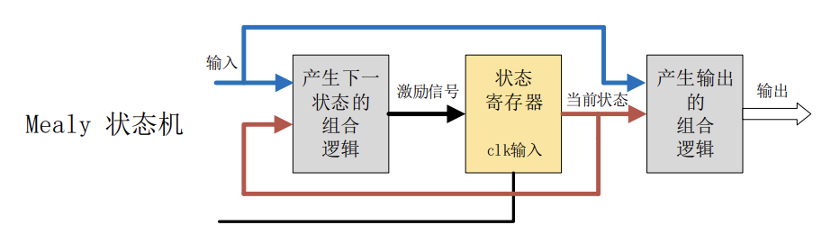
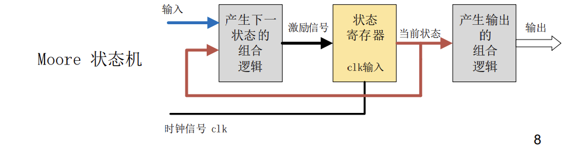
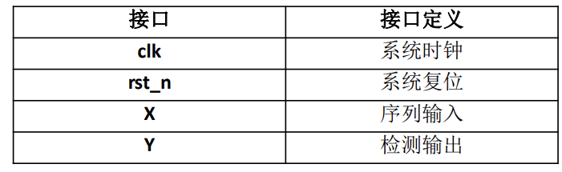
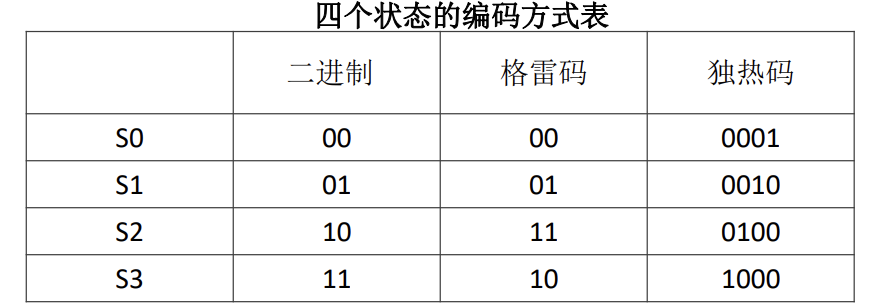
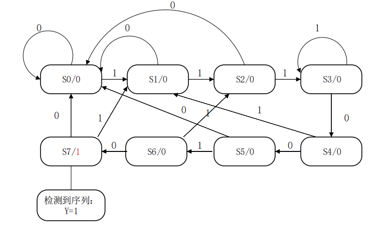
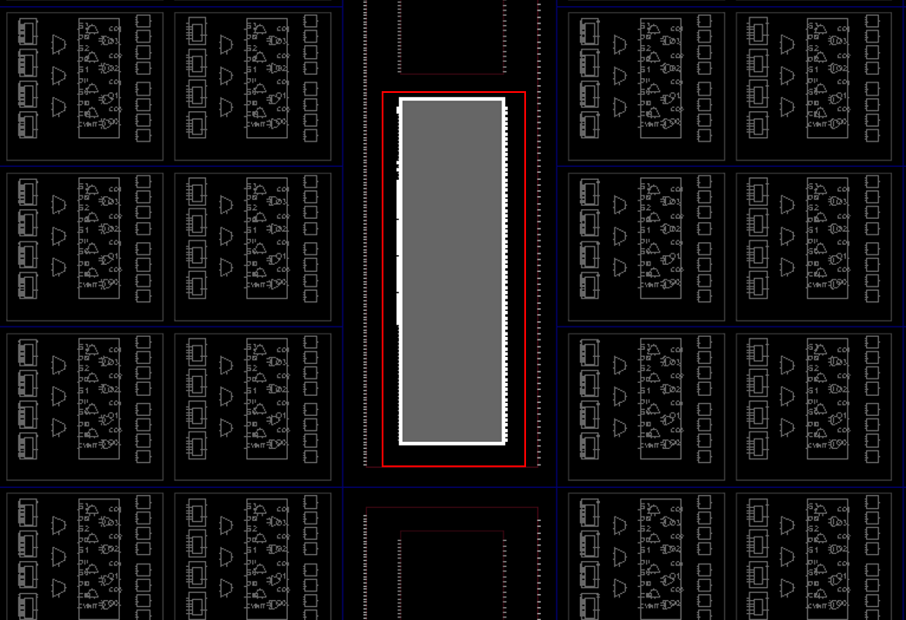
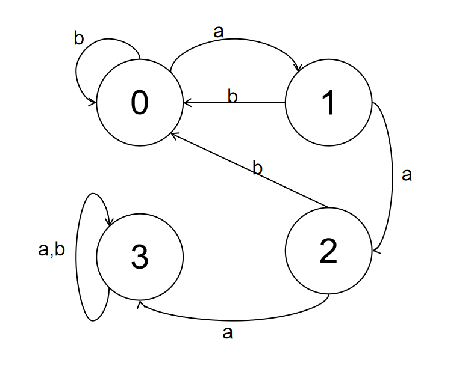
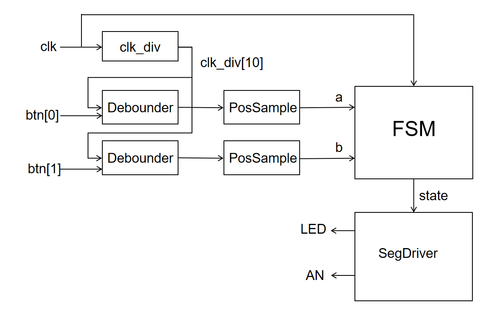

实验 3-1: 时序电路设计之有限状态机 ¶
实验目的 ¶
- 学习使用 Verilog 语言进行时序电路设计的方法
- 掌握时序电路设计的基本思路
- 掌握有限状态机的设计和实现
实验环境 ¶
- 操作系统：Windows 10+ 22H2，Ubuntu 22.04+
- VHDL：Verilog，SystemVerilog
背景知识 ¶
有限状态机 ¶
基本概念 ¶
在时序电路设计中，理清设计的时序是最重要的一环
有限状态机（Finite State Machine，简称 FSM）是在有限个状态之间按一定规律转换的时序电路。
有限状态机通常是由寄存器组和组合逻辑组成，根据当前状态和输入信号可以控制下一个状态的跳转。有限状态机在电路中通常是作为控制模块，作为整个电路模块的核心而存在。
它主要包括两大类：Mealy 型状态机 和 Moore 型状态机。
Mealy 型状态机 : 其组合逻辑的输出不仅与当前状态有关，还与输入有关。

Moore 型状态机：其组合逻辑的输出只与当前的状态有关

基本概念：
- 状态寄存器由一组触发器组成，用来记忆状态机当前所处的状态，状态的改变只发生在时钟的跳变沿。
- 状态是否改变、如何改变，取决于组合逻辑 F 的输出，F 是当前状态和输入信号的函数。
- 状态机的输出是由输出组合逻辑 G 提供的，G 也是当前状态和输入信号的函数。
设计步骤 ¶
系统架构和接口定义：

状态定义和编码：
- 状态机的编码方式主要包括：二进制码（Binary
） ，格雷码（gray） ，独热码 (one hot) - 格雷码相对于二进制码而言，在相邻状态跳转的时候，只有单比特翻转，它的功耗相对比较低。独热码相对于格雷码或者二进制码而言，它增加了两个寄存器来表示状态，但是它会更节省组合逻辑电路，因为它在比较状态的时候，只需要比较一个比特位，那么其电路的速度和可靠性就会增加

三段式设计方法
有限状态机在 Verilog 编程中有如下三种设计方法
- 一段式描述（状态跳转与输出信号都在同一个 always 块里面进行描述）
- 二段式描述（将输出信号与状态跳转分开描述，便于设计代码管理）
- 三段式描述（将输出信号与状态跳转分开描述，并且状态跳转用组合逻辑来控制）
为了时序的清楚梳理和表示，我们强烈建议使用三段式描述进行 FSM 设计
在编写 FSM 前，应该先给出状态转换图理清时序，再进行电路设计，下面举一个具体的例子：
设计一个序列检测器，检测的序列为“1110010”；当输入信号 X 中出现序列“1110010”时，输出信号 Y 输出一个高电平 ，否则输出信号 Y 为低电平。
其状态转换图如下

Verilog 三段式设计如下
本次实验的实现可参考如上代码，也可以自己整理出时序
enum 枚举
对于上面那个例子，我们可以根据状态图绘制对应的真值表，这里的 Y 指的是下个周期的 Y 值：
| S2 | S1 | S0 | X | S2 | S1 | S0 | Y |
|---|---|---|---|---|---|---|---|
| 0 | 0 | 0 | 0 | 0 | 0 | 0 | 0 |
| 0 | 0 | 0 | 1 | 0 | 0 | 1 | 0 |
| 0 | 0 | 1 | 0 | 0 | 0 | 0 | 0 |
| 0 | 0 | 1 | 1 | 0 | 1 | 0 | 0 |
| 0 | 1 | 0 | 0 | 0 | 0 | 0 | 0 |
| 0 | 1 | 0 | 1 | 1 | 0 | 0 | 0 |
| 0 | 1 | 1 | 0 | 1 | 0 | 0 | 0 |
| 0 | 1 | 1 | 1 | 0 | 1 | 1 | 0 |
| 1 | 0 | 0 | 0 | 1 | 0 | 1 | 0 |
| 1 | 0 | 0 | 1 | 0 | 0 | 1 | 0 |
| 1 | 0 | 1 | 0 | 0 | 0 | 0 | 0 |
| 1 | 0 | 1 | 1 | 1 | 1 | 0 | 0 |
| 1 | 1 | 0 | 0 | 1 | 1 | 1 | 1 |
| 1 | 1 | 0 | 1 | 0 | 1 | 0 | 0 |
| 1 | 1 | 1 | 0 | 0 | 0 | 0 | 0 |
| 1 | 1 | 1 | 1 | 0 | 0 | 1 | 0 |
我们可以像三段式的代码样例那样使用 localparam 为状态修改别名，这样比直接用立即数硬编码规范很多，但是 SystemVerilog 提供了更贴合的语法 enum：
enum定义一个枚举类型，logic [2:0]说明这个类型的位宽是 3 位，所有的枚举变量和常量都是 3 位数据。{S0,S1,S2,S3,S4,S5,S6,S7}一次定义枚举常量，从左到右依次是 0、1、2 ... 7。而不需要像localparam显式提供立即数的值。typedef ... fsm_state，将这个枚举类型定义为 fsm_state 类型。用fsm_state类型定义变量可以确保 state reg 的位宽和枚举值保持一致。
译码器范式
我们可以直接用多路选择器，根据真值表得到最后的结果，只不过现在的输入不仅仅是 X，还包括状态寄存器的 S0、S1、S2；输出不仅仅是 Y，还包括状态寄存器的 S0、S1、S2。
或者可以写做如下的电路，上下两个电路是等价的，甚至他们的电路模型也是等价的。只不过上面的写法将寄存器 data 前的多路选择器组合电路部分写在了 always 块内部，而下面的写法写在了 always 块外部。
查表法
table 二维数组可以认为是将真值表保存在 table 数组中，然后根据输入进行查表得到结果，这里的 table 表使用 wire 构造的；其实我们还可以用寄存器构造表格。
首先将表格的数据存入一个 hex 文件：
然后用 $readmemh 操作用 hex 文件的内容初始化寄存器数组：
译码器的编程范式中，查表或者多路选择器的操作是用组合电路实现的，综合之后会用 4 个 LUT4 来实现。如果我们的有限状态机比较小巧，这是足够了的，但是如果有限状态机很庞大，LUT 的数目会很多，电路会比较复杂（比如 24 个输入，24 个输出的情况
但是如果是用二维寄存器数组存储表格，最后综合可能会使用电路中的 block ram 芯片来实现二维数组（需要满足一些条件，这里不展开来讲

不过 block ram 的收益仅在状态转移表非常大的时候有效，在状态转移表很小的时候 LUT 更加的精简。此外除非有自动化脚本生成 table.hex ( 不建议手写，因为很容易写错 )
实验步骤 ¶
实验前准备 ¶
与之前的 lab 相同，启动安装在你电脑中的 Ubuntu 22.04 环境（ WSL 或虚拟机）
cd 到 sys1-sp24 文件夹
执行
这个命令将仓库更新到最新状态
设计简单的有限状态机 ¶
有限状态机接收一个由字符a, b做成的字符串，如果字符串包含连续的三个字符 a，则接受该字符串，反之则拒绝该字符串。现在我们可以设计得到状态图如下：

我们设计的电路有两个输入 a、b：
- a=1、b=0: 输入的是字符 a
- a=0、b=1: 输入的是字符 b
- a=1、b=1: 输入的是字符 a
- a=0、b=0: 没有输入，状态保持不变
于是可以进一步得到状态表：
| a | b | state | next_state |
|---|---|---|---|
| 0 | 0 | s | s |
| 0 | 1 | 00 | 00 |
| 1 | x | 00 | 01 |
| 0 | 1 | 01 | 00 |
| 1 | x | 01 | 10 |
| 0 | 1 | 10 | 00 |
| 1 | x | 10 | 11 |
| x | x | 11 | 11 |
请大家在src/lab3-1/submit/FSM.sv中实现这个有限状态机，注意复位电平、初始化状态、enum 语法等信息。
仿真 ¶
执行make verilate进行仿真测试，如果测试成功最后会输出success!!!，如果测试失败则会输出fail!!!。
DPI 模块和差分测试 ¶
在 lab2-1 的差分测试中我们使用了 function 函数实现对拍器。
本实验我们也需要实现一个 FSM 对拍器然后和 FSM 电路进行结果比较，验证正确性。我们有三种选择：
- 实现另一个 FSM 电路；但是这个工作量较大，且正确性难以保证
- 实现一个 function 函数；但是 function 函数没有状态记忆的功能，无法保留 FSM 的上一个状态
- 实现一个等价的 C 程序，当作 function 使用；工作量小、易于调试、可以保留状态、功能可以很强大
DPI 函数为 Verilog 语言提供了 C 函数调用的接口，可以像调用 function 函数那样调用 C 函数。
我们在repo/sys-project/lab3-1/sim/judge.cpp中是实现了 fsm_state 函数，该函数接受当前时钟沿的 a、b、rstn，模拟 FSM 的工作逻辑更新 state 的值，然后返回这个时钟沿时的 state 的值。为了可以被 Verilog 调用，C 程序需要包含 svdpi.h 头文件，并且做extern "C"声明。
调用 C 函数的 Verilog 文件需要以 Verilog 函数的形式声明这个函数的传参和返回值，且用import "DPI-C"来声明是外部调用的 dpi C 函数。( 参见repo/sys-project/lab3-1/sim/Judge.v )
always 块内部的语句是可以按照 C 语言的逻辑习惯来分析考虑的，大家只要不把电路思维完全抛掷脑后就好了（但是 always 块外部和 always 块之间不能用 C 语言逻辑习惯来分析考虑，切记切记
always 块内部无论有多少函数调用、无论函数调用多么复杂，都可以在一个周期内部计算完毕，因为仿真只需要考虑逻辑正确性，而无需考虑电气特性。但是请注意，如果内部的逻辑过于复杂，可能会导致得到的电路极其复杂，时延很大，无法在一个周期内计算完成，造成时序错误。
使用 DPI-C 可以用一些 C 函数、C 库来进行对拍模拟，利用很多现成的功能库可以大大减轻我们构造对拍器的工作量。但是 DPI-C 函数只能用于仿真，且不被 vivado 直接支持，所以请不要在 vivado 仿真和综合中使用（你指望一个 C 函数被综合为电路吗
综合下板 ¶
运行make bitstream生成比特流，然后下板验证。
顶层电路 ¶
top 电路的模块如下。
按钮 0 和按钮 1 得输入分别经过去抖模块和上升沿采样模块作为 FSM 模块的 a 和 b 输入。按一下按钮 0 相当于输入一个字符 a，按一下按钮 1 相当于输入一个字符 b。
FSM 模块等待 a、b 引脚的字符 a、b 得输入，然后根据依次输入的字符序列修改状态机的状态，进而判断这个字符序列是否满足要求。FSM 内部的 state 送入 SegDriver 模块输出在 LED 灯上。

实验报告 30% ¶
- 请在实验报告中详细描述每一步的过程并配有适当的截图和解释，对于仿真设计和上板验证的结果也应当有适当的解释和照片 Total: 15%
细分：
- 使用 enum 语法 FSM 设计 5%
- 综合实现有限状态机 10%
-
思考比较
enum + case的编程范式和数组查表的编程范式之间的优劣 5% -
绘制一个有限状态机的状态图和状态转移表，如果输入的 01 字符串中 1 的个数大于 3 个，则 FSM 输出 1 表示接受，反之输出 0 表示拒绝。10%
符号表示 : 输入信号 X，输出信号 Y，内部状态为 S0、S1...
- 观察以下有限状态机电路实现存在的不足和不足的原因，如果电路不稳定可能会发生什么问题（bonus，分数不溢出 report
） ：+10%
代码提交 ¶
验收检查点 20% ¶
- 仿真波形展示 6%
- 代码解释或设计思路 6%
- 下板验证 8%
提交文件 ¶
src/lab3-1/ 中编写的 submit 和 include 的代码（include 按需填写）